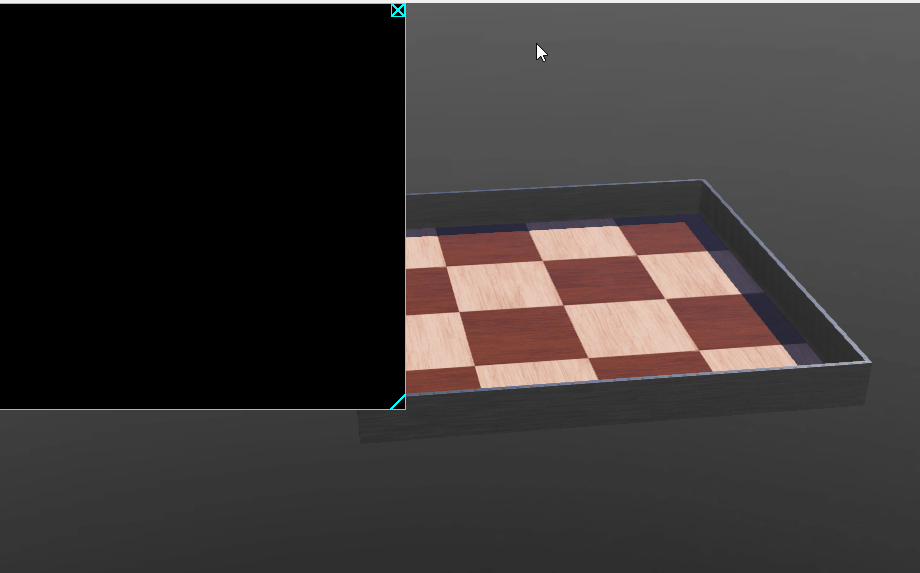
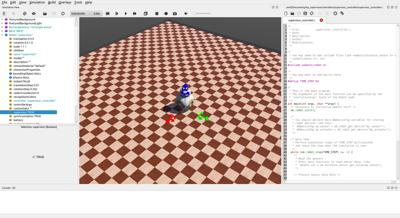

Tutorial7 <<
Previous Next >> Basketball
Tutorial8
A Supervisor oversees a world and can set or get information about it. This tutorial will teach you:
- How to move objects (移動物件) using the supervisor.
- How to delete a node (刪除節點) and spawn another (產生另一個節點) in its place.
- How to track the evolution of an object (追蹤物件演進) in the scene.
- How to change the properties of an object (改變物件性質) , namely its color (顏色).
若要使用類似 CoppeliaSim 場景中的七段顯示器, 以便建立數位記分板, 可以採用 Supervisor 控制器. (或者使用 Display 顯示分數)
The Display node allows to handle a 2D pixel array using simple API functions, and render it into a 2D overlay on the 3D view, into a 2D texture of any Shape node, or both. It can model an embedded screen or it can display any graphical information such as graphs, text, robot trajectory, filtered camera images and so on.
To model an embedded screen, the first child of the Display node should be or contain (recursive search if the first node is a Group) a Shape node having an appearance and an ImageTexture node, then the internal texture of the ImageTexture node is replaced by the texture of the Display. Both Appearance and PBRAppearance nodes are supported. In case of PBRAppearance node, at least PBRAppearance.baseColorMap or PBRAppearance.emissiveColorMap ImageTexture node should be defined. If both are defined, then both textures will be internally replaced by the Display texture. Using the Appearance node and setting the Material.emissiveColor field to 1 1 1 helps preserving the original colors of the loaded Display texture. Additionally, it is necessary to set the filtering field of the ImageTexture nodes to 0 in order to prevent issues when distancing oneself from the display.
Example:
from controller import Supervisor
# Create the Supervisor instance
supervisor = Supervisor()
# Get the display node
display = supervisor.getDevice("display")
# Set the initial digit
digit = 0
# Set the font size
font_size = 24
# Main loop
while supervisor.step(int(supervisor.getBasicTimeStep())) != -1:
# Clear the display
display.setAlpha(1.0)
display.setColor(0x000000)
display.fillRectangle(0, 0, display.getWidth(), display.getHeight())
# Draw the digit
display.setAlpha(1.0)
display.setColor(0xFFFFFF)
display.setFont("Arial", font_size, True)
display.drawText(str(digit), display.getWidth() // 2 - font_size, display.getHeight() // 2 - font_size)
# Increment the digit
digit += 1
# Reset the digit after 100
if digit > 100:
digit = 0
Display demo: display_demo.7z

上列 Display 節點可應用於競技場景中的計時與計分流程
These are only some tasks the Supervisor is capable of, refer to its documentation for a complete overview. Just note that it is, however, not possible to access directly measurements recorded by devices mounted on a different robot even if the supervisor option is enabled.
Setting up the Environment and Adding a Supervisor
Hands-on #1: The objective is to create the environment and add a Supervisor. Create a new project from File / New / New Project Directory... menu item and follow the instructions:
- Name the project directory
my_supervisor instead of the proposed my_project.
- Name the world file
my_supervisor.wbt instead of the proposed empty.wbt.
- Click all the tick boxes, including the "Add a rectangle arena" which is not ticked by default. (需要納入競技平台)
- In order to have more space, enlarge the arena by setting the size to 10x10 meters by changing the
floorSize field.
- Add a BB-8 robot to the scene, to do this click the
Add button  and navigate to:
and navigate to: PROTO nodes (Webots projects) / robots / sphero / bb8.
- For the purpose of this tutorial, remove the default controller of BB-8 by clicking the
controller field, then the Select button, and pick <none> from the list. (移除原型節點中既有的控制器設定)
- Add a simple Robot node to the scene, this will become our Supervisor. The Robot node can be found in the
base nodes category when clicking the Add button. To better keep track of it, change its name field to supervisor.
- Despite the name change the node is still currently just a Robot, to turn this robot into a Supervisor requires to set its
supervisor field to "TRUE".
- Much like a normal robot, the behavior of a supervisor is defined by a controller. Add a controller using the File / New / New Robot Controller... menu item, selecting the programming language you prefer. For this tutorial, Python is the choice, but the code will be provided for all other options. Set
supervisor_controller as the name of the controller and click finish (for C++ and Java call it SupervisorController instead).
- Expand once more the Robot node, press the
controller field and click the Select button in order to attribute the controller you just created to the supervisor.
- Save the world.
If you followed these steps, your environment should look like this:

Resulting environment.
So far our Supervisor is quite dull, because the controller that was attributed to it does nothing.
In this section, we will program the supervisor to move the BB-8 robot to a different location. It should be noted that to achieve this we are effectively cheating, rather than instructing the BB-8 to move to a new location we will transport it there. In other words the movement will ignore all the physics, but herein lies the power of a Supervisor, as it can bend the rules however it likes.
As you might have noticed, the default controller we created from the File / New / New Robot Controller... menu item is setup for a classic robot, not a supervisor. In order to access the powers of a supervisor requires therefore some slight changes to the controller. To begin with, replace the contents of the default controller with the following code, depending on the language you have picked and save.
The changes include:
- import the Supervisor library/module instead of the Robot one
- instead of creating a
Robot instance, create a Supervisor one.
Note: It is important to remember that a supervisor is nothing more than a robot with special powers, which implies that whatever a robot can do, so can the supervisor. This means that you do not need a Robot instance if you have a supervisor one. For example the infinite loop that determines the pace of the controller (namely: while robot.step(TIME_STEP) != -1) does not need to be changed, as the supervisor can do the same.
Here are the instructions to follow based on the programming language you picked.
Replace the contents of your controller with the following and save.
from controller import Supervisor
TIME_STEP = 32
robot = Supervisor() # create Supervisor instance
# [CODE PLACEHOLDER 1]
i = 0
while robot.step(TIME_STEP) != -1:
# [CODE PLACEHOLDER 2]
i += 1
To move BB-8 to a new location is quite straightforward, if you wished to do so without the help of a supervisor you would simply change its translation field to the desired value, say 0 0 2.5. The Supervisor does it much in the same way.
Hands-on #2: Move BB-8 using the Supervisor. In principle the world could be very complex, so it is necessary to have a way of uniquely identifying our BB-8 among the other objects. To do so we can use the DEF mechanism explored in tutorial 2. Click the BB-8 node in the scene tree and give it a DEF name "BB-8", then save the world.
Behind the scenes, each node is uniquely identifiable by a node reference and by having this reference, we can modify it. To retrieve the reference, the supervisor method getFromDef can be used. In CODE PLACEHOLDER 1, retrieve the node reference of BB-8.
bb8_node = robot.getFromDef('BB-8')
Now that we have access to the node, we need to get access to its translation field, specifically we need a reference to this field as we just did for the node. To do so, the getField method can be used.
translation_field = bb8_node.getField('translation')
Finally, now that a reference to the translation field is available, all that remains to do is to set it to a different value. Once again, the supervisor API has all the necessary tools to do so. The translation field is of type SFVec3, which just means it is a three dimensional vector. The value of this field can be set by using the setSFVec3f method.
if i == 0:
new_value = [2.5, 0, 0]
translation_field.setSFVec3f(new_value)
That is all there is to it. If you save and run the simulation you will see that BB-8 is transported to a new location instantly.
This is a simple example, but the principle remains the same no matter which field you wish to change. You can for instance increase the size of an object, perhaps change its color, change the light conditions, or reset its position if it goes out of bounds, the options are limitless. It is just a matter of getting a node reference, from which a field reference can be obtained by name, and set its value by using the function that is appropriate for the type you are trying to change.
Spawning and Removing Nodes
Supervisors can also be used to populate the environment, allowing to dynamically setup the scene. This section focuses on how nodes can be added and removed, specifically we will remove BB-8 from this world, and replace it with a different robot, namely Nao.
Hands-on #3: Removing and adding nodes. In the previous section, we already saw how to retrieve the node reference of an object. A node can be removed from the scene tree by using the remove method. The if condition is not necessary, it simply adds a 10 step delay before the removal to make it more apparent. Add the following code in CODE PLACEHOLDER 2.
if i == 10:
bb8_node.remove()
After 10 time steps, BB-8 will be removed from the scene. Now, let's instead add the Nao robot after 20 time steps.
In order to add a node, we must know where we wish to spawn it in the scene tree. Should it be added at the top level of the scene tree? Should it inserted as a field of a another node? These questions will change how the node will be inserted and which supervisor function needs to be used, but the constant factor among them is that we need a reference to this position. In this context, the Nao robot will be added at the last position in the scene tree, where BB-8 used to appear.
First of all, we need to declare the Nao to Webots as in importable PROTO for the world we created. To proceed, click on the IMPORTABLE EXTERNPROTO button located at the top of the scene tree.
The field editor, located below the scene tree, should display an IMPORTABLE EXTERNPROTO pane with a button named "Insert new". Click this button and select the Nao robot from the PROTO nodes (Webots Projects) section. Press the "Insert" button. If you hover the Nao item that appeared below the "Insert new" button, you will see in the tooltip the URL from where it is downloaded. Save the world file, so that this information is stored.
Although not apparent, the scene tree is in fact a Group node, and each of the objects in the scene tree like WorldInfo, Viewpoint, TexturedBackground and so forth are nothing more than nodes defined as its children. We refer to this Group node containing everything as the root node. In order to insert the Nao robot, the reference we require is actually a reference to the children field of the root node. In the spot marked by CODE PLACEHOLDER 1, the following code allows to get this reference.
root_node = robot.getRoot()
children_field = root_node.getField('children')
To spawn a node you should use the supervisor function importMFNodeFromString or importSFNodeFromString. The "MFNode" and "SFNode" components in the name of these functions specify what is the type of the node where the objects is inserted into. "MFNode" stands for multi-field node whereas "sf_node" stands for single-field node.
As previously mentioned, the Nao should be added to the children field of the root node, and as you might guess, this children field is of type multi-field.
Let's add it from string after 20 time steps, add the following snippet in CODE PLACEHOLDER 2:
if i == 20:
children_field.importMFNodeFromString(-1, 'Nao { }')
The "-1" specifies in which position we wish to insert the node, in this case, to insert it at the last position. "Nao { }" is a string that describes what we wish to spawn. The way the object is described is by using the VRML97 format, this is the format used in the world files as well. After 20 timesteps, the Nao robot will spawn in the middle of the scene.
Let's assume we wanted the Nao to be spawned in the position BB-8 used to be, we certainly could move it there following the procedure of hands-on 2, but that would not be smart. In fact, we can simply specify the translation field directly in the string! Replace the string "Nao { }" with "Nao { translation 2.5 0 0.334 }" and it will spawn exactly at that location. It does not stop there, in the same fashion we could define its controller parameter, or the cameraWidth or any other of its parameters in the same fashion.
Trick: If you are not familiar with VRML97, an easy trick to define these strings is to let Webots do it for you. You can manually create the object (using the Webots interface), and then save the world. When saving, Webots will translate what you built into a string of text. If you open the world file with a text editor, you can simply copy the description of the object.
Since the supervisor has unlimited power, it is the perfect tool to track the evolution of a simulation. In this section, we will use the acquired knowledge to spawn a ball, and track its position as it falls and when it touches the ground change its color.
Hands-on #4: We need to use the wb_supervisor_field_import_mf_node_from_string function to spawn the ball at location 0 1 1, and since we are at it, let us get a reference to this node and to the color field of the Ball. But first, we have to declare the Ball as an IMPORTABLE EXTERNPROTO as we did it previously for the Nao robot. Once done, in CODE PLACEHOLDER 1 add:
children_field.importMFNodeFromString(-1, 'DEF BALL Ball { translation 0 1 1 }')
ball_node = robot.getFromDef('BALL')
color_field = ball_node.getField('color')
If you run the simulation, the ball should appear and begin to fall until it clashes with the ground.
In order to track the position of the ball, we could get a reference to its translation field and read that value continuously however a simpler approach would be to use another supervisor method created for that task, namely getPosition. In CODE PLACEHOLDER 2 add:
position = ball_node.getPosition()
print('Ball position: %f %f %f\n' %(position[0], position[1], position[2]))
Now that we can track it, let's change the color of the bool as soon as it collides. Since the ball has a radius of 0.2, we can change the color field when the "Y" coordinate of the position is smaller than this value.
if position[2] < 0.2:
red_color = [1, 0, 0]
color_field.setSFColor(red_color)
Here you can find the complete code of the controller.
from controller import Supervisor
TIME_STEP = 32
robot = Supervisor() # create Supervisor instance
# [CODE PLACEHOLDER 1]
bb8_node = robot.getFromDef('BB-8')
translation_field = bb8_node.getField('translation')
root_node = robot.getRoot()
children_field = root_node.getField('children')
children_field.importMFNodeFromString(-1, 'DEF BALL Ball { translation 0 1 1 }')
ball_node = robot.getFromDef('BALL')
color_field = ball_node.getField('color')
i = 0
while robot.step(TIME_STEP) != -1:
# [CODE PLACEHOLDER 2]
if (i == 0):
new_value = [2.5, 0, 0]
translation_field.setSFVec3f(new_value)
if i == 10:
bb8_node.remove()
if i == 20:
children_field.importMFNodeFromString(-1, 'Nao { }')
position = ball_node.getPosition()
print('Ball position: %f %f %f\n' %(position[0], position[1], position[2]))
if position[2] < 0.2:
red_color = [1, 0, 0]
color_field.setSFColor(red_color)
i += 1
With this tutorial you have learned:
- A Supervisor is nothing more than a Robot with extra powers, therefore anything that you can do with a
Robot instance, you can do with a Supervisor instance.
- A Supervisor is not bound by physics, since its powers are unlimited, it can also "cheat".
- Whenever one wishes to alter the scene tree using a Supervisor, a reference needs to be obtained:
- To insert a node, you need a reference of the field that will contain it.
- To remove a node, you need a reference to the node (i.e., the object) itself.
- To change the value of a parameter like (translation, color, size, etc.) you need a reference to said field.
- Spawning a robot or an object can be achieved by defining it as an
IMPORTABLE EXTERNPROTO and using the wb_supervisor_field_import_mf_node_from_string API function.
Tutorial7 <<
Previous Next >> Basketball